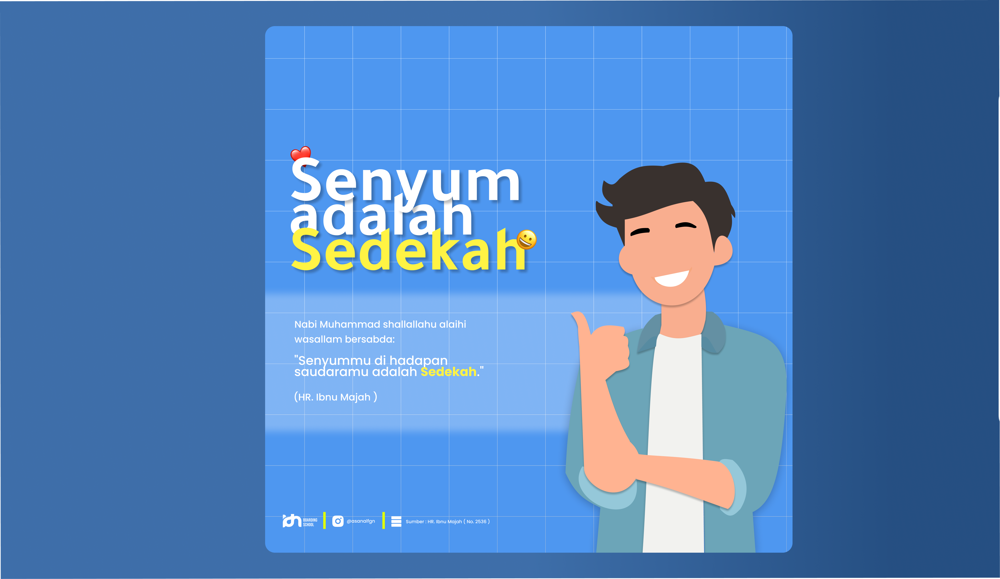

"A Smile is Charity" is a poster and motion animation project I created for a school assignment. The design is inspired by a beautiful hadith of Prophet Muhammad ﷺ: "Your smile in the presence of your brother is charity." I wanted to turn this simple yet profound message into something visual — something that feels warm, peaceful, and easy to share. The project combines minimalist typography, earthy colors, and gentle motion to make the message feel alive.
The main challenge was figuring out how to visually represent a spiritual message without making it feel too serious or overly decorative. I wanted the design to feel sincere and inviting, not preachy. At the same time, I had to keep the layout clean and minimal so the message would stand out clearly. The animation part was also tricky — it needed to feel calm and subtle, not distracting.
I ended up with a clean, centered poster layout using a warm color palette — soft beige, gold, and deep maroon. These colors felt natural and gave the design a grounded, spiritual tone. For the animation, I added a subtle drift effect to the text and decorative elements. It's not flashy — just a gentle movement that makes the poster feel alive when viewed on screen. The overall approach was to keep things simple, respectful, and visually warm.
Interactive Figma prototype — click around to explore the design
This project reminded me that design isn't just about making things look good — it's about communicating a feeling. Creating something inspired by Islamic values pushed me to think more intentionally about color, typography, and motion. I also got to practice my animation skills and explore how subtle motion can add emotional depth to a static design. More than anything, this project taught me that even a simple message — like a smile being charity — can become something meaningful when you treat it with care and respect.